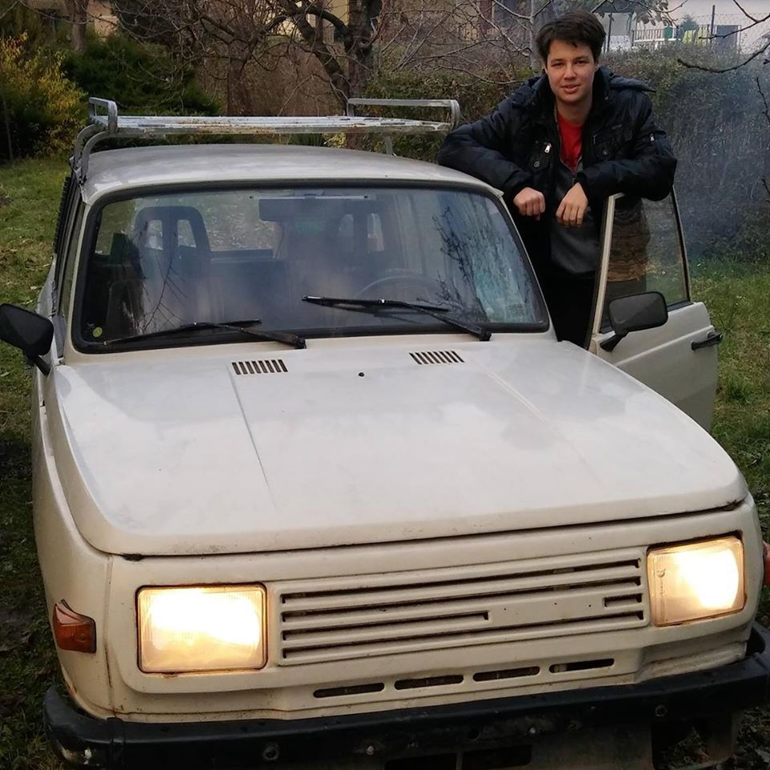
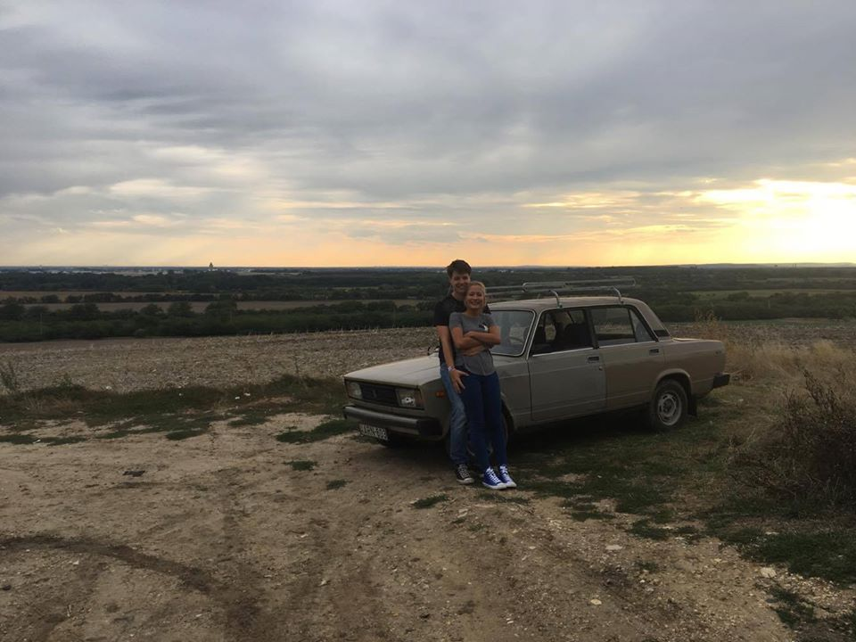
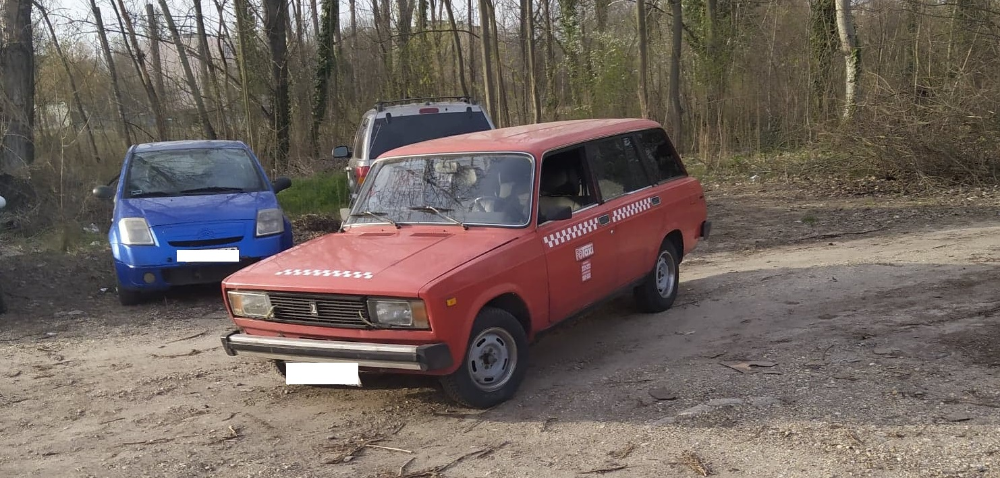

|  |
Ugyan még csak 3 éve van jogosítványom, már 3 autóm is volt, mind régi szocialista típus. Az első a képen látható Wartburg 353W Tourist, vagyis a kombi kivitel, amit 1 évig építettem még a jogosítvány előtt, de sajnos végül meg kellett váljak tőle és hivatalosan soha nem is vezettem. |
|
A másodikat 30 éve már egy kisebb ugrásnak is hívhattam volna, mostanra inkább már csak típusváltás. Ez a gyöngyszem egy Lada 2105 volt a rokonoktól potom pénzért, amit az állapota is tükrözött. Nem egész 1 évig építettem és használtam, majd sajnos egy kisteherautó vetett véget az idilli kapcsolatnak, az autó totálkárosra tört, ezért elbontottam. |
 |
|  |
Az utolsó és egyben mostani egy Lada 21043 /1500s/ kombi, ami messze a legrosszabb és legdrágább volt az eddigiek közül, de ezen tanultam meg mindent, amit egy ilyen autón tudni lehet (5 motorcsere, 2 hídcsere, 3 váltócsere, stb.). Nincs olyan porcikája, amihez nem nyúltam volna hozzá és mindig van rajta valami javítani való, de immár 2 éves "kapcsolatunk" óta most mondhatom először azt, hogy már majdnem kész... |